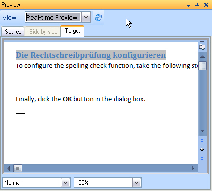
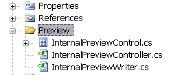

Introduction
This section explains how to develop a document preview that offers more functionality than a simple external preview.
Add internal preview functionality to your file type plug-in
Instead of launching an external application such as Microsoft Word or Notepad, you can generate a preview in a window that Trados Studio embeds. You can implement a static internal preview, which displays the source or target text inside Trados Studio. With this preview type, the side-by-side translation editor does not interact with the preview document.
You can also implement a dynamic real-time preview. This preview type is more advanced because it interacts with the side-by-side editor in Trados Studio. When users select a segment in the editor, the corresponding segment in the preview is highlighted, and the reverse also applies.
The following example shows an internal real-time preview of a DOC file in Trados Studio:

This project requires several new items, so add a Preview folder to your Visual Studio project. You will use this folder later for the internal preview control and related classes.

See also
Note
This content may be out-of-date. To check the latest information on this topic, inspect the libraries using the Visual Studio Object Browser.